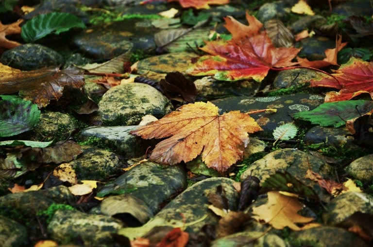

wanneer je de kwaliteit minder kan je een duidelijk verschil zien er zijn minder verschillende kleuren en de foto wordt ook waziger. Ook wordt de file size kleiner
Wanneer ik dit op tekst probeer is deze nog perfect leesbaar en krijg ik enkel een slider om het aantal kleuren te verminderen.
